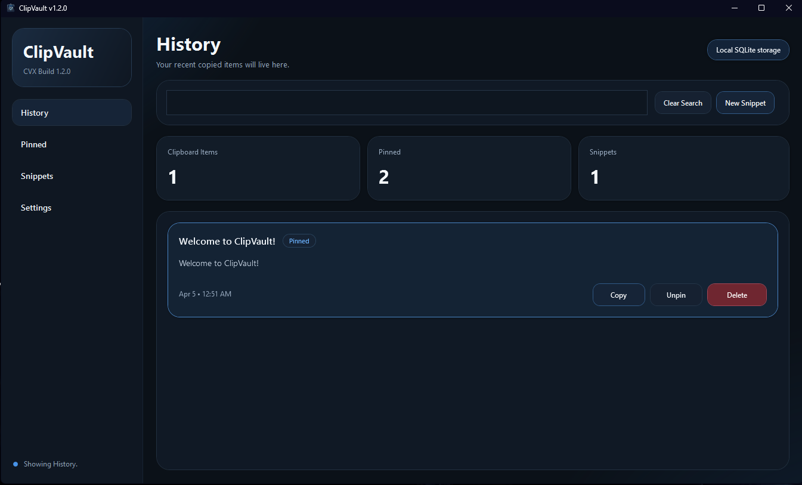
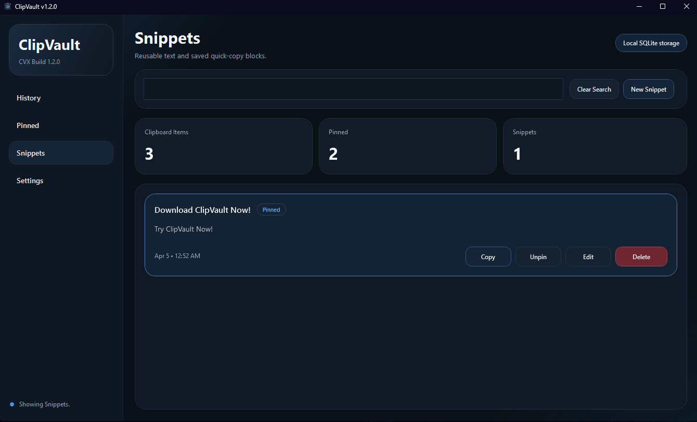
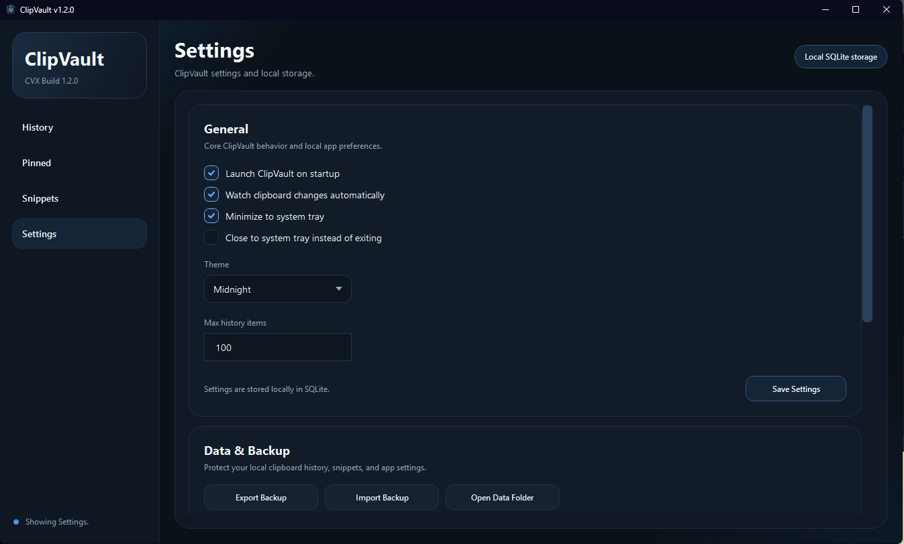

Clipboard history
Automatically captures copied text and keeps recent history easy to browse.
ClipVault is a polished desktop clipboard manager for Windows built for people who want a cleaner, faster, and more reliable clipboard workflow.

Clipboard data, settings, and logs stay on the machine.
No bloated feature dump. Just the clipboard tools that matter.
A native desktop experience designed around a polished WPF UI.
ClipVault focuses on the core features people actually use every day.
Automatically captures copied text and keeps recent history easy to browse.
Keep important clipboard entries available and protected from normal cleanup.
Save text you use often and copy it back instantly when you need it.
Quickly find clipboard entries, pinned items, snippets, and relevant log data.
Keep ClipVault close by without it getting in the way of the rest of your desktop.
Installed builds can check for updates through the ClipVault release feed.
Replace these screenshots with your best polished captures before you publish.
Main window

Snippets

Settings
ClipVault is focused on local text clipboard workflows. Clipboard data, settings, and logs are stored locally on the machine.
Because clipboard data can be sensitive, the goal is to keep the experience clear, respectful, and easy to control.
Download the latest release, explore the project on GitHub, and follow future updates as the app grows.